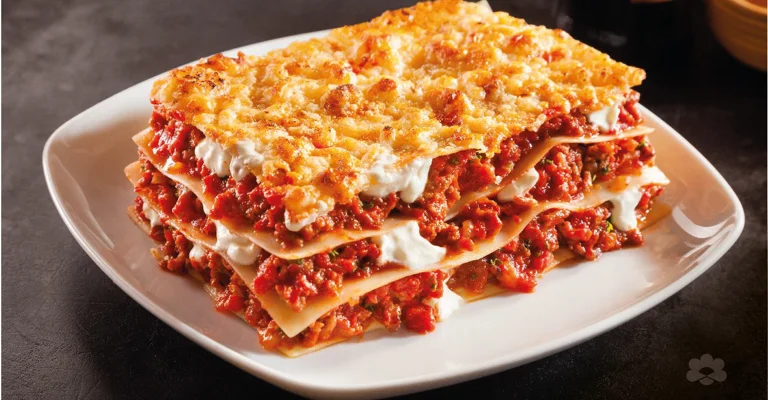

Lasagna

This Lasagna recipe takes 1 1/2 hours to make and serves 10 people, great for a dinner party
Ingredients
- 1 pound ground beef
- 1 pound bulk Italian sausage
- 1 cup sliced black olives
- 1/2 cup warm water
- 2 tbls minced garlic
- 1 tbls dried oregano
- 1 tbls dried onion flakes
- 2 tsp garlic powder
- 2 tsp ground black pepper
- 1 1/2 tsp dried sage
- 1 pinch dried basil
- 2 jars marinara sauce
- 1 pkt lasagna noodles
- 8 ounces ricotta cheese
- 1 pound mozzarella cheese, shredded
Directions
- Cook ground beef and Italian sausage in a large skillet over medium-high heat until browned and crumbled; drain excess grease. Stir in olives and water; season with minced garlic, oregano, onion flakes, garlic powder, pepper, sage, and basil. Simmer, stirring frequently, about 15 minutes. Stir in marinara sauce and remove from the heat.
- Preheat the oven to 375 degrees F or 190 degrees C
- Spoon a layer of meat and sauce on the bottom of a 9x13 inch baking dish. Cover with a layer of dry noodles. Spread a thin layer of ricotta cheese over noodles; sprinkle with some mozzarella cheese. Cover with another layer of sauce; repeat layering, ending with meat and sauce on top. Reserve about 1/2 cup mozzarella cheese.
- Bake in the preheated oven for 45 minutes, checking after 30 minutes. Lasagna is cooked when it's easily pierced with a knife. Sprinkle reserved mozzarella cheese over lasagna and bake until melted, about 10 minutes more.
Home